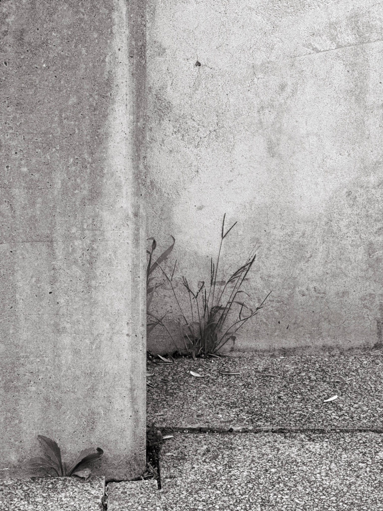
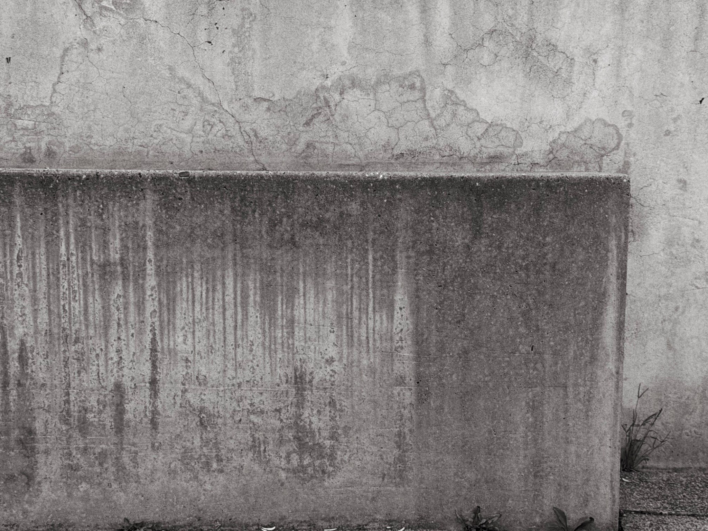
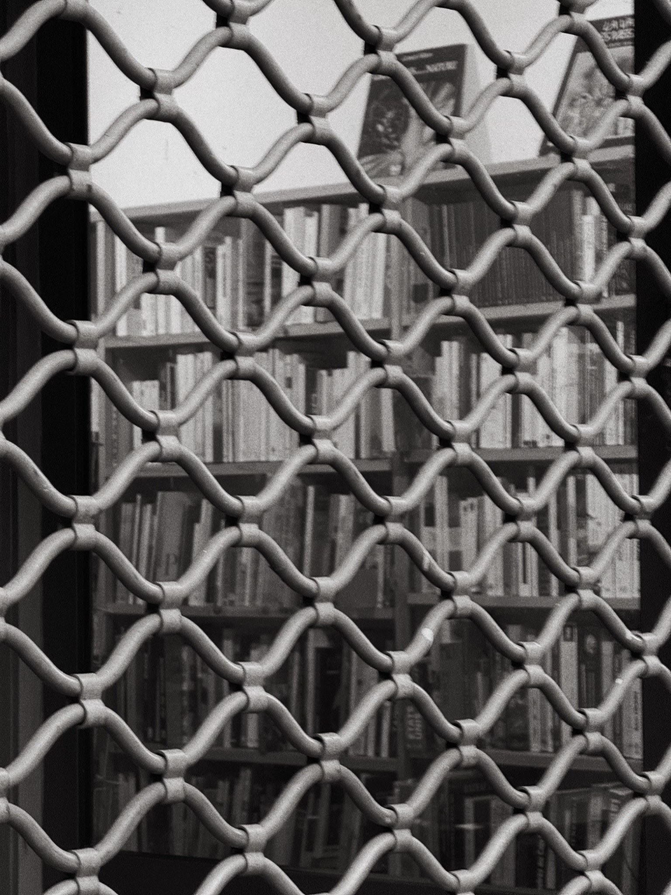
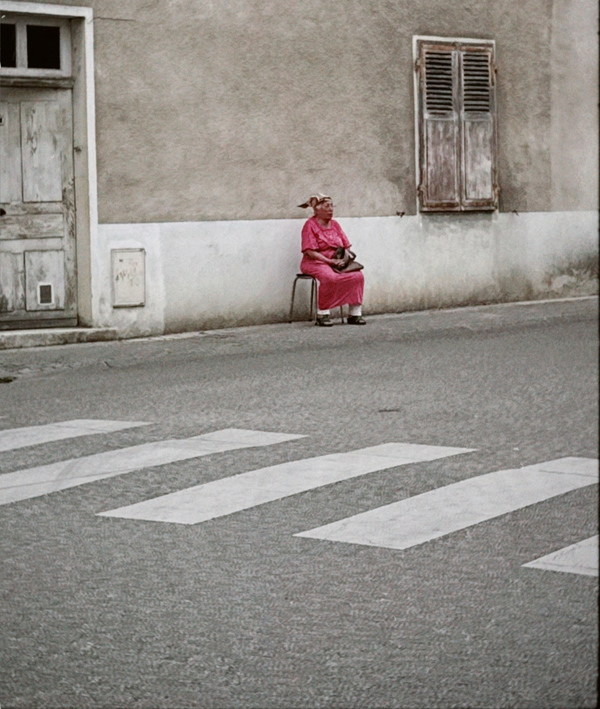
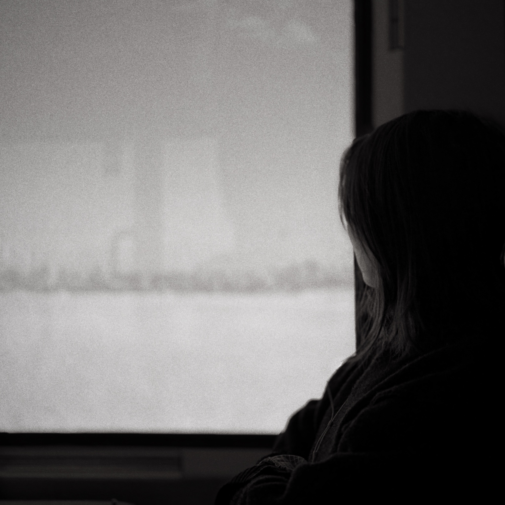

I am Mohamed Rafoud, born in Offenbach, Germany.
I photograph urban spaces, transitions, and situations without events.
My work focuses on states rather than moments—quiet places where people become part of the structure and the city recedes.




